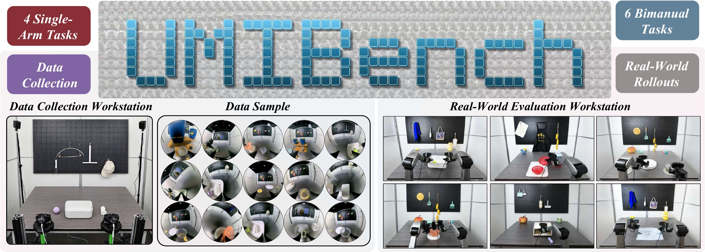
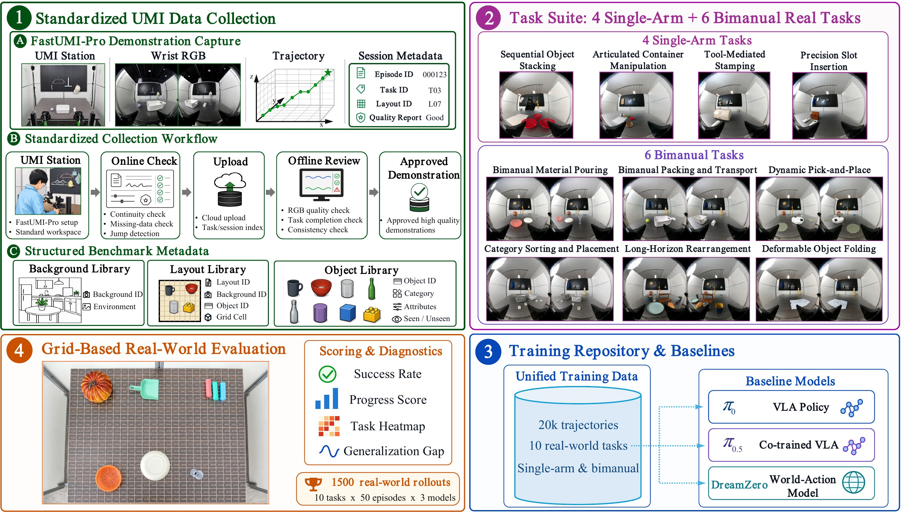

Task 01
UMI-Bench 1.0: An Open and Reproducible Real-World Benchmark for Tabletop Robotic Manipulation with UMI Data
1Soochow University ·
2Lumos Robotics ·
3Fudan University ·
4Shanghai Jiao Tong University
5Shanghai TeleAI ·
6Shanghai AI Laboratory ·
7INSAIT ·
8Xi'an Jiaotong-Liverpool University
Abstract
Real-robot evaluation is essential for understanding whether learned manipulation policies can operate reliably outside curated demonstrations. This need is particularly pressing for Universal Manipulation Interface (UMI)-style policies, whose performance depends on the coupling between wrist-view observations, action representation, data collection, and physical deployment.
Existing real-world benchmarks have made important progress, but they are not designed around this UMI data-to-deployment setting. We present UMI-Bench 1.0, a local-first real-robot benchmark for standardized evaluation of UMI-style manipulation policies. To the best of our knowledge, this is the first benchmark dedicated to real-world evaluation of UMI-based manipulation models.
UMI-Bench aligns data collection, scene reset, policy execution, result logging, and task-factor analysis within a unified protocol. By making the full evaluation process reproducible and auditable, UMI-Bench provides a practical testbed for measuring how UMI-trained policies generalize to real physical manipulation.

Data-to-evaluation Pipeline
UMI-Bench connects demonstration capture, UMI data samples, task setup, real-world evaluation workstations, and rollout logging into one reproducible benchmark workflow.

Seen and unseen rollouts
Each task is shown with one representative seen-condition rollout and one unseen-condition rollout. All clips are web-optimized, muted, and shown at 2x playback.
Task 02
Trash Bag
Task 03
Stamp Ink
Task 04
Remote Storage
Task 05
Pour Beans
Task 06
Pack & Carry
Task 07
Turntable Pick
Task 08
Mahjong Sort
Task 09
Kitchen Rearrange
Task 10
Pants Folding
Release
Paper, code, dataset, and model assets
Public links can be filled in as the release becomes available. The page is already structured for GitHub Pages and can be extended with a leaderboard or submission instructions.
BibTeX
Citation
@article{jin2026umibench,
title = {UMI-Bench 1.0: An Open and Reproducible Real-World Benchmark for Tabletop Robotic Manipulation with UMI Data},
author = {Jin, Shi and Wang, Yuntian and Duan, Yuhui and Wu, Di and Dong, Gaoqi and Liu, Xiaohang and Li, Xiaotong and Jia, Hongfei and Zhang, Zehao and Wang, Tianyu and Jia, Zhongjie and Yao, Yuanqi and Bai, Chenjia and Zhaxizhuoma and Liu, Siao and Cao, Nieqing and Wang, Jin and Yu, Chao and Ding, Yan},
journal = {CoRL},
year = {2026}
}